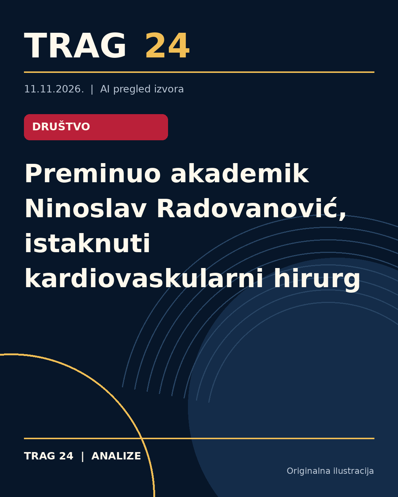

Preminuo akademik Ninoslav Radovanović, istaknuti kardiovaskularni hirurg

ŠTA SE DOGODILO
Akademik Ninoslav Radovanović, renomirani stručnjak u oblasti kardiovaskularne hirurgije, preminuo je 10. novembra u Ženevi u 87. godini života.
HRONOLOGIJA
Radovanović je diplomirao na Medicinskom fakultetu Univerziteta u Beogradu 1965. godine, nakon čega je obavio obavezni lekarski staž na klinikama tog fakulteta. 1979. godine imenovan je za redovnog profesora Medicinskog fakulteta u Novom Sadu, a od 1980. godine bio je direktor Instituta za kardiovaskularne bolesti u Sremskoj Kamenici, gde je 1984. godine osnovana Univerzitetska klinika za kardiovaskularnu hirurgiju. Za dopisnog člana SANU izabran je 2003, a za redovnog člana 2009. godine.
ŠTA NAVODE IZVORI
Sve tri vesti prenose zvanično saopštenje Srpske akademije nauka i umetnosti (SANU). U saopštenju se ističe da je Radovanović učestvovao u više od 30.000 operacija na otvorenom srcu, od kojih je više od 15.000 izveo samostalno. Takođe se navodi da je bio član brojnih stručnih udruženja i društava, kako u Srbiji, tako i u inostranstvu, kao što su Srpsko lekarsko društvo, Udruženje kardiovaskularnih hirurga Srbije, Švajcarsko kardiološko društvo i druge međunarodne organizacije.
ŠTA JE POTVRĐENO
Preminuće Radovanovića potvrđeno je iz zvaničnog saopštenja SANU. Njegova karijera detaljno je opisana kroz podatke o obrazovanju, profesorskom radu i značajnim doprinosima u oblasti kardiohirurgije, uključujući uvođenje inovativnih operativnih tehnika i unapređenje hirurških metoda. Istaknuto je i njegovo članstvo u različitim stručnim odborima i udruženjima. Svi izvori se slažu u činjenicama i ne iznose kontradiktorne informacije.
ŠTA NIJE POTVRĐENO
Nisu dostupni detalji o uzrocima smrti akademika Radovanovića. Takođe, nema dodatnih informacija o okolnostima njegove bolesti ili drugih detalja iz privatnog života.
ŠTA OSTАJE OTVORENO: Ostaje otvoreno da li će biti organizovano zvanično komemorativno okupljanje ili druge javne manifestacije povodom njegove smrti. Takođe, nije navedeno gde će biti sahranjen ili obavljen oproštaj.
Izvori
- https://nova.rs/vesti/drustvo/sanu-preminuo-akademik-ninoslav-radovanovic/
- https://www.danas.rs/vesti/drustvo/preminuo-ninoslav-radovanovic/
- https://n1info.rs/vesti/sanu-preminuo-akademik-ninoslav-radovanovic/
Ova analiza je pripremljena uz pomoć veštačke inteligencije na osnovu javno dostupnih izvora. Navodi izvora nisu nužno nezavisno potvrđeni.